07 · Moderne CPU-Architekturen
Mikrocomputertechnik 3 · Abhängigkeiten, geordnete Bestätigung und Vorhersage
Prof. Dr.-Ing. Daniel Klünder
Zwei Recheneinheiten – doppelt so schnell?
Einstieg · Die Breitenfrage
Ein einzelner Prozessorkern erhält bei gleichem Takt eine zweite Addiereinheit.
- Wird jedes Programm damit doppelt so schnell?
- Was ändert sich, wenn jede Summe die vorherige benötigt?
- Welche Information fehlt für eine begründete Zeitangabe?
Zwei Minuten: Vorhersage und Begründung zu zweit sammeln.
Vom Speicherzugriff zur Befehlsparallelität
Einstieg · Ein Kern und zusätzliche Rechenhardware
- Vorlesungen 1–3: Speicher, Caches und korrekte Unterbrechung
- Heute: mehrere Befehle innerhalb eines CPU-Kerns bearbeiten
- Unabhängige Arbeit kann Wartezeit überlappen
- Der sichtbare Programmzustand muss weiterhin korrekt bleiben
Voraussetzungen und drei Zeitmodelle
Einstieg · Ein Kern und zusätzliche Rechenhardware
- C-Integer, Arrays und einfache Registeroperationen
- Cachetreffer und Speicherwartezeiten aus Vorlesung 2
- Interrupts und Exceptions aus Vorlesung 3
- M1: fünf skalare Stufen; M2: kurzer Breitenvergleich
- M3: vier Befehle mit festgelegtem Issue und Retire
Vier Schulstunden: Ablauf
Einstieg · Ein Kern und zusätzliche Rechenhardware
| 1 |
Befehlsweg, Pipeline und Metriken: 35 min |
Aufgabe 1: 10 min |
| 2 |
Breite, Ressourcen und Abhängigkeiten: 30 min |
Aufgaben 2.1–2.2: 15 min |
| 3 |
Reihenfolge, Bestätigung und Vorhersage: 30 min |
Auswahl aus 3.2–3.3 und 4.1: 15 min |
| 4 |
Spekulation und Compiler: 15 min |
Auswahl aus 5.1–5.2 und 6.1: 15 min; Quiz: 15 min |
1 · Vom Programm zur Pipeline
Wie entstehen aus einem Programm einzelne Arbeitsschritte?
Befehlssatz → Datenpfad → Überlappung → Laufzeit
Befehlssatz und Mikroarchitektur trennen
1 / 5 · Befehlsweg und Pipeline
| ISA |
add berechnet ein Registerergebnis |
| Mikroarchitektur |
eine oder mehrere Recheneinheiten |
| Beobachtung |
Laufzeit eines bestimmten Programms |
Gleicher Befehlssatz bedeutet nicht gleiche Taktzahl.
Vom C-Ausdruck zum Maschinenbefehl
1 / 5 · Befehlsweg und Pipeline
u = a + b;
v = c + d;
z = u + v;
- Namen stehen für Werte;
z benötigt zwei zuvor erzeugte Summen
- Eine C-Zeile ist keine feste Anzahl von Maschinenbefehlen
- Für das Zeitmodell werden konkrete Registeroperationen festgelegt
Was Load und Add bedeuten
1 / 5 · Befehlsweg und Pipeline
RV32I-Lehrfolge; s1 zeigt auf ein gültiges ausgerichtetes Wort:
lw t0, 0(s1)
add t1, t0, t2
Bei Speicherwert \(10\) und t2 \(=1\): t0 \(=10\), danach t1 \(=11\).
Fünf Stufen mit eigenen Aufgaben
1 / 5 · Befehlsweg und Pipeline
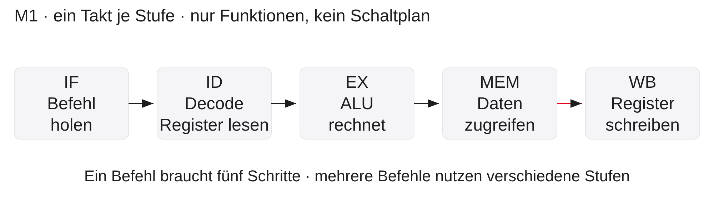
M1: höchstens ein neuer Befehl je Takt; Stufen verschiedener Befehle überlappen.
Durchlaufdauer und Ergebnisrate unterscheiden
1 / 5 · Befehlsweg und Pipeline
M1: fünf Ein-Takt-Stufen, keine Wartezyklen.
| einzelner Befehl |
Wie lange vom Start bis zum Ende? |
fünf Takte |
| gefüllte Pipeline |
Wie oft kann ein Ergebnis folgen? |
eines je Takt |
Eine hohe Rate macht den Weg eines einzelnen Befehls nicht kürzer.
Vier Befehle: nacheinander oder überlappt?
1 / 5 · Befehlsweg und Pipeline
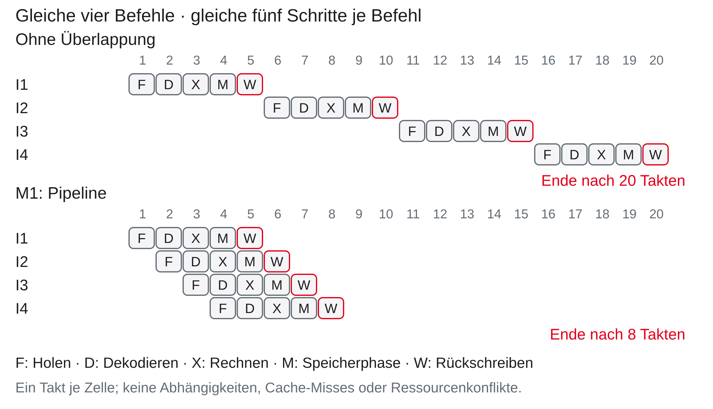
Überlappung ist bereits Parallelität
1 / 5 · Befehlsweg und Pipeline
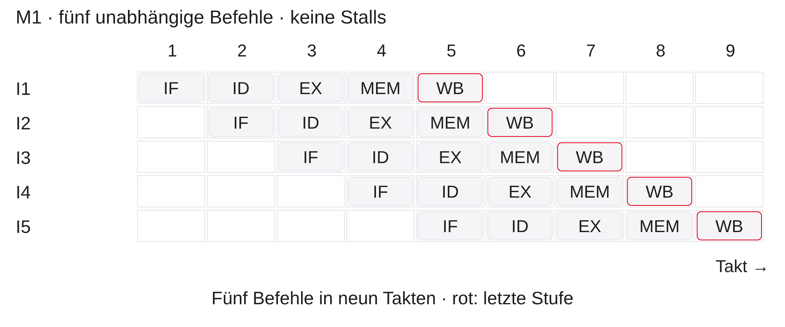
M1: fünf unabhängige Befehle, keine Wartezyklen.
Das kurze Fenster enthält Füllen und Leeren
1 / 5 · Befehlsweg und Pipeline
Für \(N\) unabhängige Befehle und \(k\) gleich lange Stufen in M1:
\[
C=N+k-1
\]
Bei \(N=5\), \(k=5\): \(C=9\) Takte, nicht fünf.
Bei \(N=100\): \(C=104\) Takte.
Forwarding verkürzt Warten, nicht die Abhängigkeit
1 / 5 · Befehlsweg und Pipeline
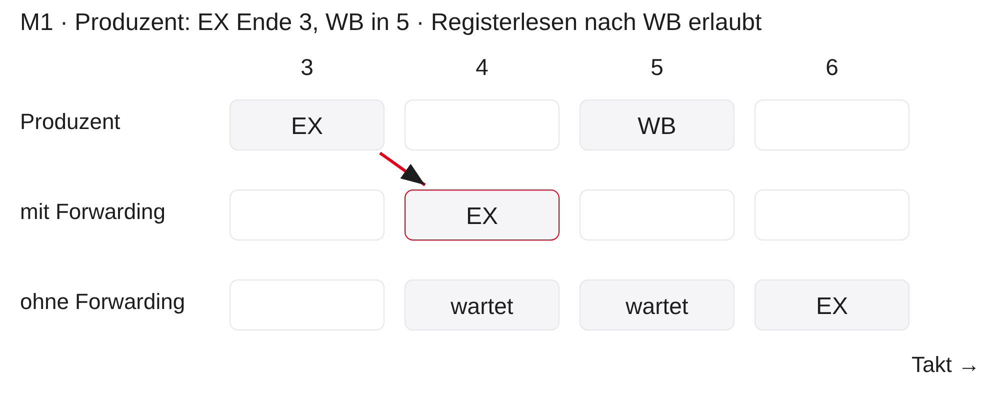
M1: Registerschreiben und anschließendes Lesen im selben Takt erlaubt.
IPC und CPI brauchen dieselbe Zählbasis
1 / 5 · Befehlsweg und Pipeline
Retired ISA-Befehle \(N>0\), Core-Takte \(C>0\), dasselbe Fenster:
\[
\mathrm{IPC}=\frac{N}{C},\qquad
\mathrm{CPI}=\frac{C}{N}=\frac{1}{\mathrm{IPC}}
\]
M1 mit fünf Befehlen: IPC \(=5/9\), CPI \(=9/5=1{,}8\).
Höheres IPC muss nicht kürzere Laufzeit bedeuten
1 / 5 · Befehlsweg und Pipeline
Bei konstanter Frequenz \(f\):
\[
T=\frac{N\cdot\mathrm{CPI}}{f}
\]
| A |
\(100\) |
\(1\) |
\(100\) |
| B |
\(150\) |
\(0{,}8\) |
\(120\) |
Bei \(100\) MHz: \(1\,\mu\)s gegenüber \(1{,}2\,\mu\)s.
Mehr Takt und mehr Breite kosten Energie
1 / 5 · Befehlsweg und Pipeline
Vereinfachte dynamische Leistung:
\[
P_{\mathrm{dyn}}\approx\alpha C_{\mathrm{eff}}V^2f
\]
Bei festem \(\alpha,C_{\mathrm{eff}}\): \(1{,}5\)-facher Takt und \(1{,}1\)-fache Spannung ergeben Faktor \(1{,}815\).
Leckleistung und zusätzliche Hardware sind getrennt zu betrachten.
2 · Breite und Abhängigkeiten
Wann können mehrere Operationen gleichzeitig starten?
Wertefluss → Ressourcen → Ausgabebreite
ILP ist verfügbare Unabhängigkeit
2 / 5 · Breite und Abhängigkeiten
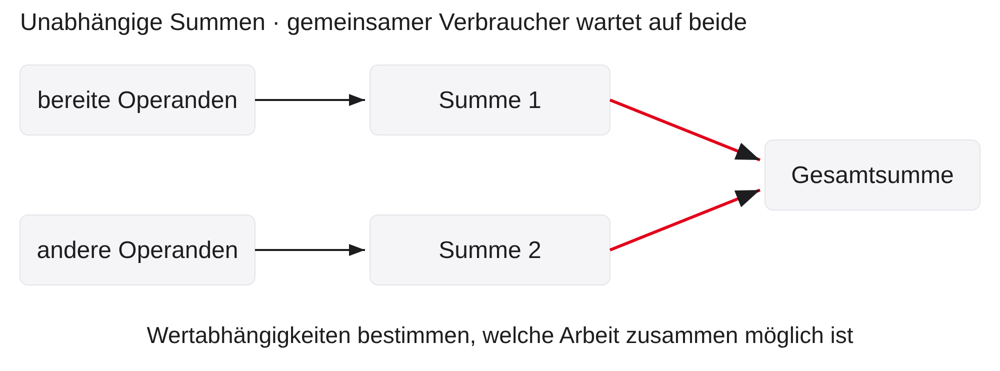
Bereite Operanden und passende Ressourcen bestimmen den möglichen Start.
RAW: Der Leser braucht den erzeugten Wert
2 / 5 · Breite und Abhängigkeiten
RISC-V-Lehrfolge A–D, zunächst A und B:
lw t0, 0(s1) # A
add t1, t0, t2 # B
Bei Speicherwert \(10\) und t2 \(=1\) muss B den Wert \(10\) verwenden.
WAR: Der ältere Leser braucht die alte Version
2 / 5 · Breite und Abhängigkeiten
add t1, t0, t2 # B liest t0
sub t0, t4, t5 # C schreibt neues t0
B braucht den Loadwert \(10\); C erzeugt aus \(8-3\) den neuen Wert \(5\).
WAW: Der jüngere Schreiber bestimmt den Endwert
2 / 5 · Breite und Abhängigkeiten
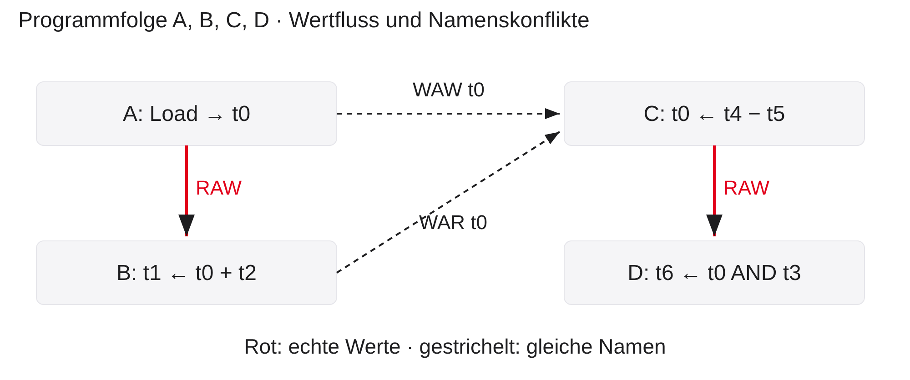
A lädt t0 \(=10\), C schreibt später t0 \(=5\).
Skalar und superskalar zählen verschiedene Starts
2 / 5 · Breite und Abhängigkeiten
| skalar |
eine |
| zweifach superskalar |
zwei |
- Eine skalare Pipeline kann trotzdem mehrere Befehle gleichzeitig enthalten
- Breite bezeichnet eine Kapazität, keine garantierte Auslastung
Zwei bereite Rechnungen – ein gemeinsamer Nutzer
2 / 5 · Breite und Abhängigkeiten
RV32I-Lehrfolge; alle a-Quellen liegen bereits bereit:
add t0, a0, a1 # I1: 2 + 3 = 5
add t1, a2, a3 # I2: 4 + 1 = 5
add t2, t0, t1 # I3: braucht I1 und I2
xor t3, a4, a5 # I4: 6 XOR 3 = 5
Welche Operationen benötigen tatsächlich ein anderes Ergebnis?
Zwei ALUs sind noch kein vollständiger breiter Kern
2 / 5 · Breite und Abhängigkeiten
Für einen Doppelstart müssen gleichzeitig passen:
- zwei vorbereitete Operationen mit verfügbaren Operanden
- zwei freie passende Ausführungsmöglichkeiten
- genügend Operandenzugriffe und Ergebniswege
- Platz für spätere geordnete Bestätigung
Zwei Loads passen nicht automatisch in eine einzige Load/Store-Einheit.
Der engste Abschnitt begrenzt die dauerhafte Rate
2 / 5 · Breite und Abhängigkeiten
Fiktiver Befehlsweg, jeweils höchstens pro Takt:
| vier Befehle |
zwei |
zwei |
einer |
Endliche Puffer können kurze Unterschiede abfangen, nicht dauernd wachsen.
Superskalar, Vektor und Multicore auseinanderhalten
2 / 5 · Breite und Abhängigkeiten
| superskalar |
mehrere Befehle eines Befehlsstroms |
| Vektor / SIMD |
dieselbe Operation auf mehreren Datenelementen |
| Multicore |
mehrere Kerne mit eigenen Ausführungskontexten |
Heute: Parallelität innerhalb eines Kerns; die anderen Ebenen folgen später.
Superskalarität beschreibt Breite
2 / 5 · Breite und Abhängigkeiten
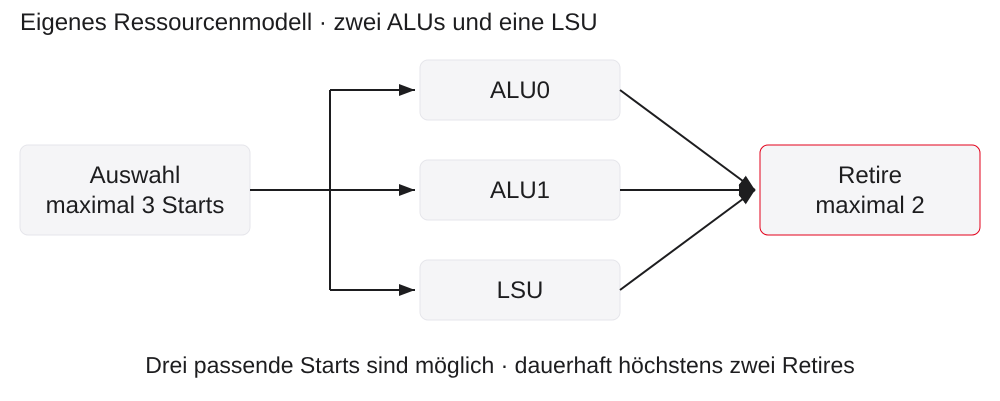
Mehrere Starts pro Takt setzen passende Befehle und Ressourcen voraus.
Ein Taktvertrag für die kurzen Breitenbeispiele
2 / 5 · Breite und Abhängigkeiten
M2 und seine ausdrücklich benannten Varianten:
- Operanden müssen am Taktbeginn vorliegen; dort startet die Operation.
- Das ALU-Ergebnis liegt am Ende desselben Takts vor.
- Ein Nutzer kann es frühestens im nächsten Takt verwenden.
- Retire erfolgt geordnet, ebenfalls frühestens im Folgetakt.
Fetch und Decode sind davor abgeschlossen; genügend Registerports sind angenommen.
Ein Doppelstart mit abhängigem Verbraucher
2 / 5 · Breite und Abhängigkeiten
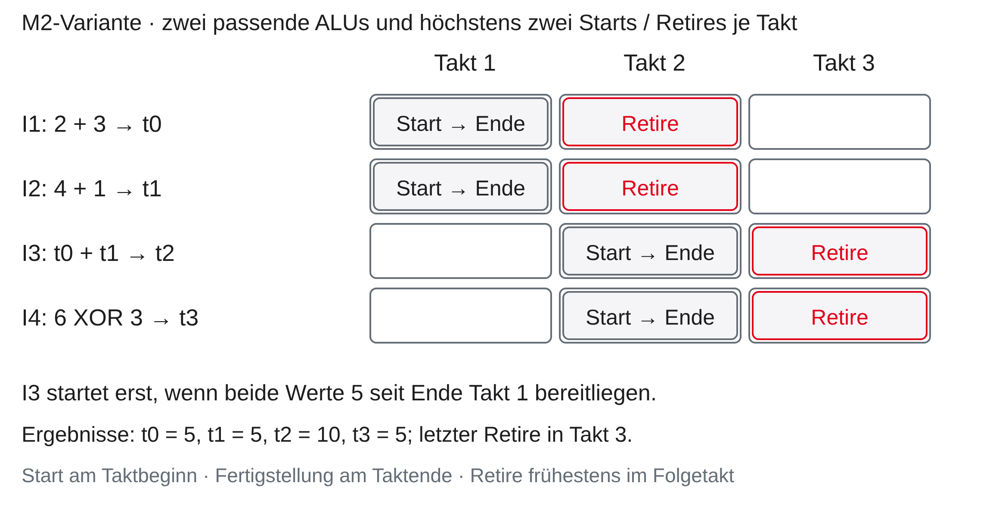
Eine abhängige Kette lässt die zweite ALU frei
2 / 5 · Breite und Abhängigkeiten
M2-Variante: vier Additionen, jede benötigt das vorangehende Ergebnis.
| I1 |
1 |
1 |
2 |
| I2 |
2 |
2 |
3 |
| I3 |
3 |
3 |
4 |
| I4 |
4 |
4 |
5 |
Trotz zwei ALUs: fünf Takte bis zum letzten Retire.
Vier Befehle: breit starten und breit bestätigen
2 / 5 · Breite und Abhängigkeiten
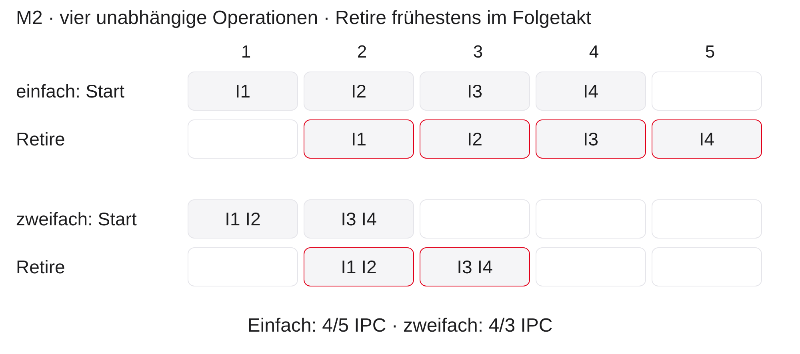
M2: Ergebnis am Starttaktende, Retire frühestens im Folgetakt.
Latenz und Initiationsintervall sind verschieden
2 / 5 · Breite und Abhängigkeiten
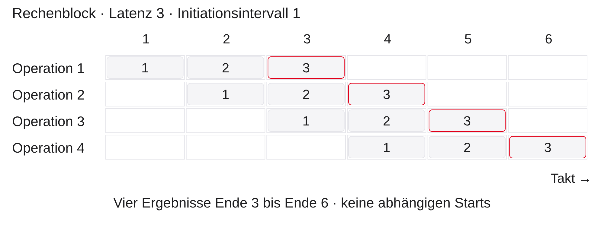
Lehrblock: Latenz \(3\) Takte, neuer Start alle \(1\) Takt.
Fetch-Bytes sind keine feste Befehlszahl
2 / 5 · Breite und Abhängigkeiten
- \(16\) vollständig ausgerichtete Bytes: vier 32-Bit-Befehle
- Mit nur 16-Bit-Befehlen wären es acht
- Mischungen und Grenzen verändern die Aufteilung
- Decode-, Issue- und Retire-Breite bleiben getrennte Limits
3 · Vorziehen und geordnet bestätigen
Wie bleibt die Programmwirkung richtig, wenn intern anders gerechnet wird?
Auswahl → Registerversionen → Bestätigung
Breite und Auswahlreihenfolge sind zwei Achsen
3 / 5 · Reihenfolge und Bestätigung
| Programmreihenfolge beibehalten |
skalar, In-Order |
superskalar, In-Order |
| jüngere bereite Arbeit vorziehen |
skalar, Out-of-Order |
superskalar, Out-of-Order |
Breiter starten und früher andere Arbeit auswählen sind verschiedene Entscheidungen.
Out-of-Order ändert die Startreihenfolge
3 / 5 · Reihenfolge und Bestätigung
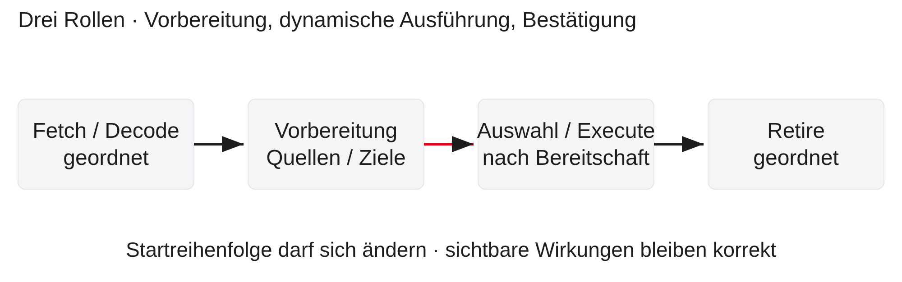
Ein Kern mit Issue-Breite eins kann bereits Out-of-Order arbeiten.
Architekturregister und physische Versionen
3 / 5 · Reihenfolge und Bestätigung
- RV32I: \(32\) sichtbare Integernamen;
x0 ist fest null
- Physische Register speichern interne Versionen
- Eine Abbildung verbindet Namen und aktuelle Version
- Mehr interne Plätze ändern den sichtbaren Befehlssatz nicht
Renaming: Quellen festhalten, neues Ziel vergeben
3 / 5 · Reihenfolge und Bestätigung
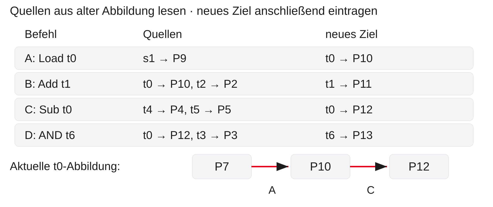
Start: t0 \(\mapsto\) P7; freie Ziele P10, P11, P12, P13.
Die aktuelle Abbildung ersetzt keinen alten Quelltag
3 / 5 · Reihenfolge und Bestätigung
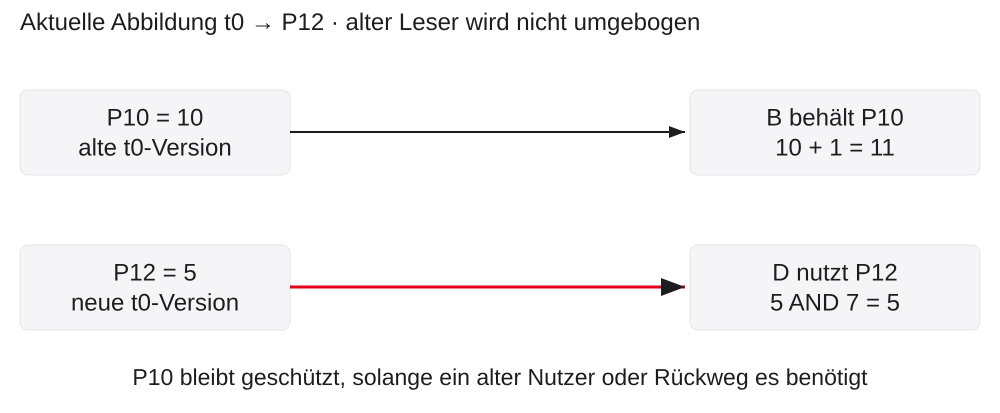
B berechnet \(10+1=11\); D berechnet \(5\ \mathrm{AND}\ 7=5\).
Bereit heißt noch nicht ausgewählt
3 / 5 · Reihenfolge und Bestätigung
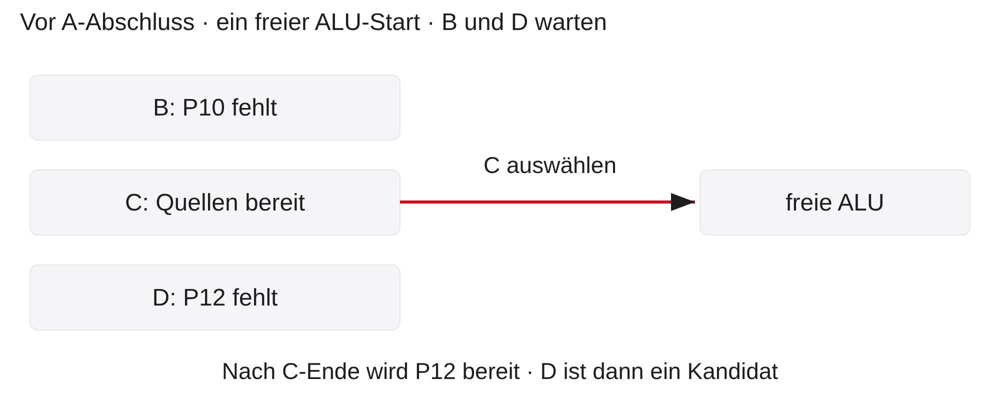
Operanden, freie Einheit, Port und Startbudget gemeinsam prüfen.
Ein festes Modell für den Reihenfolgevergleich
3 / 5 · Reihenfolge und Bestätigung
M3 beginnt beim ersten Issue; A–D sind bereits dekodiert und umbenannt.
| Issue |
maximal \(1\) je Takt |
| Einheiten |
eine ALU, eine LSU |
| A: Load |
Ergebnis Ende Takt \(4\) |
| übrige Operationen |
Ergebnis Ende ihres Starttakts |
| Retire |
maximal \(2\), geordnet, frühestens im Folgetakt |
In-Order: B blockiert die jüngeren Starts
3 / 5 · Reihenfolge und Bestätigung
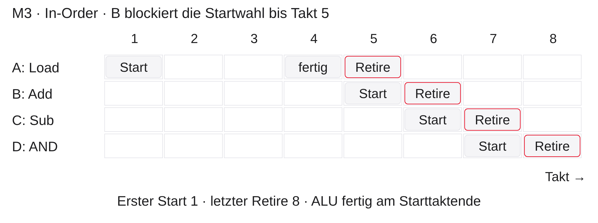
Fenster: erster Start in Takt \(1\) bis letzter Retire in Takt \(8\).
Out-of-Order: C und D nutzen die Wartezeit
3 / 5 · Reihenfolge und Bestätigung
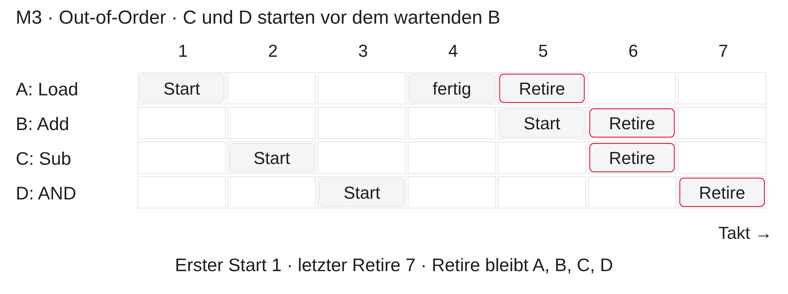
Startreihenfolge A, C, D, B; Bestätigung A, B, C, D.
Die Bilanz hängt am ganzen Fenster
3 / 5 · Reihenfolge und Bestätigung
| In-Order |
\(8\) |
\(4/8=0{,}5\) |
\(8/4=2\) |
| Out-of-Order |
\(7\) |
\(4/7\approx0{,}571\) |
\(7/4=1{,}75\) |
Zeitreduktion: \(1-7/8=12{,}5\,\%\).
Beschleunigungsfaktor: \(8/7\approx1{,}143\).
Der ROB verwaltet Ordnung und Status
3 / 5 · Reihenfolge und Bestätigung
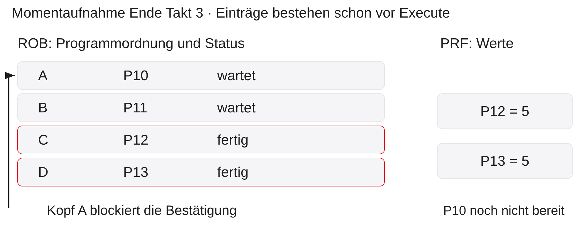
Lehrmodell: Zahlenwerte in der PRF, Status und Reihenfolge im ROB.
Eine Exception bestätigt kein jüngeres Ergebnis
3 / 5 · Reihenfolge und Bestätigung
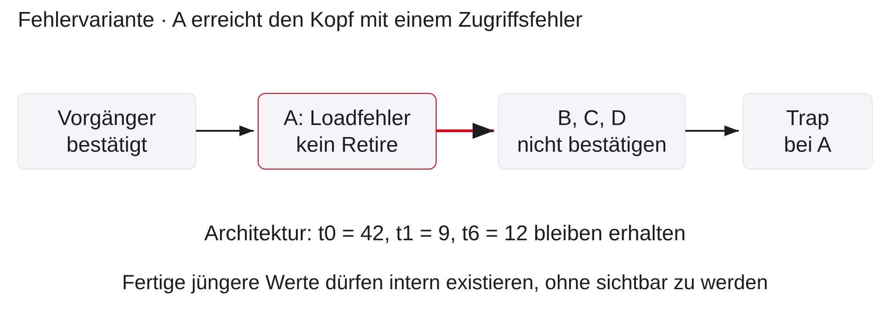
Fehlervariante von M3: A lädt aus einem nicht erlaubten Bereich.
Interrupt und Exception brauchen verschiedene Grenzen
3 / 5 · Reihenfolge und Bestätigung
| Exception |
zu einem bestimmten fehlerhaften Befehl |
| Interrupt |
externe Anforderung, Annahme an zulässiger Grenze |
Ein gültiger Zustand ist ein bestätigter Programmanfang, kein Gemisch beliebiger Fertigstellungen.
Ein Store hat mehr als einen Abschlusszeitpunkt
3 / 5 · Reihenfolge und Bestätigung
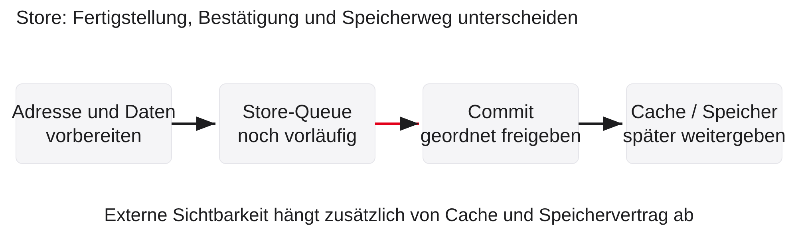
Bestätigen, zum Speicherpfad weitergeben und extern sichtbar werden unterscheiden.
Register-Renaming löst keine Speicheraliase
3 / 5 · Reihenfolge und Bestätigung
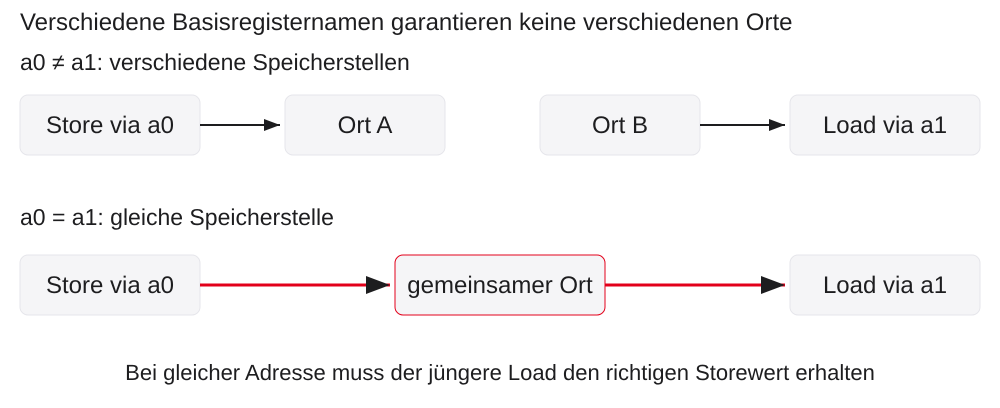
Verschiedene Zeigernamen sind kein Beweis für unabhängige Speicherstellen.
Endliche Puffer begrenzen das Vorziehen
3 / 5 · Reihenfolge und Bestätigung
- Ein langer Load kann den Bestätigungskopf blockieren
- ROB und Issue-Queue haben endliche Kapazität
- Register, Ports und Speicherbandbreite bleiben begrenzt
- Unabhängige Arbeit hilft nur innerhalb dieser Grenzen
4 · Den nächsten Pfad vorhersagen
Welche Befehle sollen überhaupt als Nächstes vorbereitet werden?
Richtung und Ziel → Vorhersagezustand → Wiederanlauf
Ein Sprung braucht Richtung und Ziel
4 / 5 · Sprünge und Vorhersage
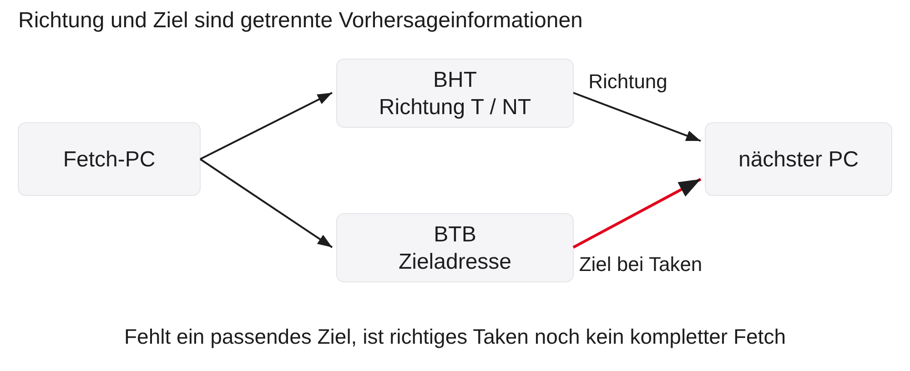
Taken beantwortet „springen?“; ein Target beantwortet „wohin?“.
Eine Fehlvorhersage kostet Wiederanlaufzeit
4 / 5 · Sprünge und Vorhersage
Penalty ist ein definierter Zusatzaufwand, nicht automatisch die Stufenanzahl.
CPI-Aufschlag und Durchsatzverlust trennen
4 / 5 · Sprünge und Vorhersage
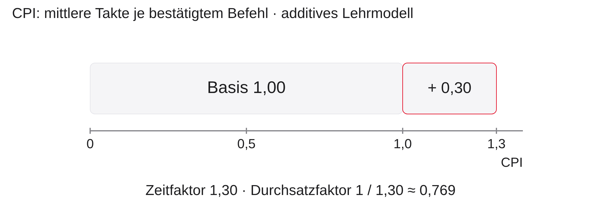
\[
\Delta\mathrm{CPI}=0{,}20\cdot0{,}10\cdot15=0{,}30
\]
Ein Bit merkt nur das letzte Ergebnis
4 / 5 · Sprünge und Vorhersage
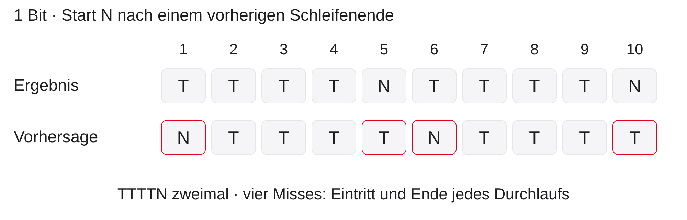
Modell: Vorhersage = gespeichertes letztes Ergebnis.
Zwei Bits erzeugen Hysterese
4 / 5 · Sprünge und Vorhersage
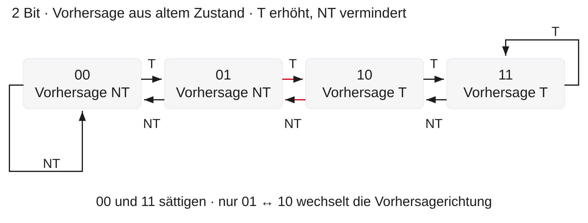
Aus 11 führt ein NT nur nach 10: Vorhersage bleibt T.
Vorhersage zuerst, Update danach
4 / 5 · Sprünge und Vorhersage
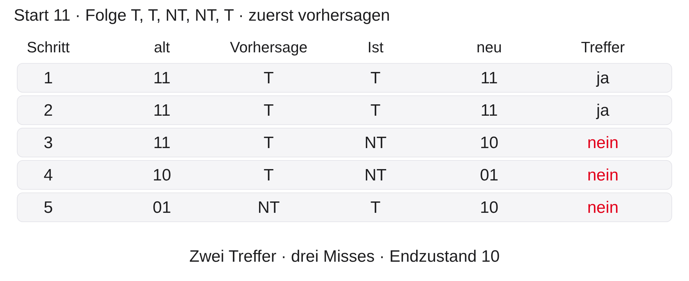
Start 11; Folge T, T, NT, NT, T: zwei Treffer, drei Misses.
Tabellen können sich Einträge teilen
4 / 5 · Sprünge und Vorhersage · Vertiefung zur Lektüre
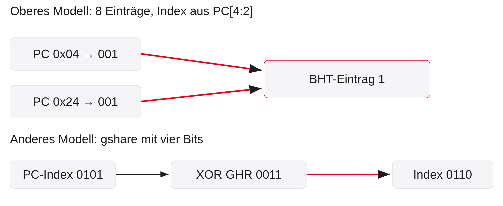
Ein besserer Index beseitigt weder jede Kollision noch jeden falschen Verlauf.
Rollback betrifft nicht jeden internen Zustand
4 / 5 · Sprünge und Vorhersage
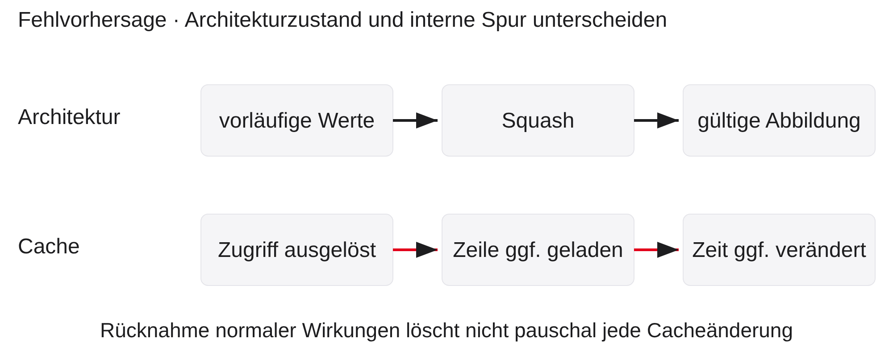
Architektonisch korrekter Kontrollfluss kann interne Nebenwirkungen hinterlassen.
Ein Cache-Seitenkanal benötigt eine Wertkopplung
4 / 5 · Sprünge und Vorhersage
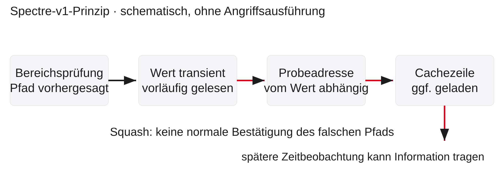
Verworfener Programmwert und beobachtbare Cache-Spur sind verschiedene Dinge.
Unterschiedliche Mechanismen brauchen passende Maßnahmen
4 / 5 · Sprünge und Vorhersage · Vertiefung zur Lektüre
| Spectre-v1 |
falsch vorhergesagter Pfad einer Prüfung |
| ursprünglicher Meltdown |
Berechtigungsprüfung auf betroffenen Designs |
Passende Barrieren, Maskierung und Speicherabbildung sind keine austauschbaren Universalrezepte.
5 · Wirkung prüfen und einordnen
Wann ist eine Optimierung funktional richtig – und wann schneller?
Compiler → Abhängigkeiten → Funktionsnachweis → Zeitnachweis
Compiler und Hardware planen zu verschiedenen Zeiten
5 / 5 · Compiler und Wirkung
- Statisches Scheduling verändert die Übersetzung vor der Ausführung
- Dynamische Auswahl reagiert auf aktuelle Bereitschaft
- Beide müssen Werte und Nebenwirkungen erhalten
-O3 garantiert keine bestimmte Befehlsfolge und keine kürzere Laufzeit
Übersetzung und Funktion sind eigene Nachweise
5 / 5 · Compiler und Wirkung · Vertiefung zur Lektüre
Vom Repository-Hauptordner:
gcc -std=c11 -O3 -Wall -Wextra -Werror \
labs/src/lab07_ilp.c -o /tmp/lab07_ilp
/tmp/lab07_ilp
Host-C prüft Summen; Compiler Explorer zeigt Befehle, kein OoO-Timing.
Abschlussquiz: Fenster, Version und Vorhersage nennen
5 / 5 · Compiler und Wirkung
- Zehn QuizAcademy-Fragen
- Zehn Minuten bearbeiten, fünf Minuten auswerten
- Bei jeder Entscheidung die benötigte Bedingung begründen
- Vergleichbare Antwortlängen, genau eine richtige Option
Zurück zu den zwei Recheneinheiten
5 / 5 · Compiler und Wirkung
| zwei passende unabhängige Rechnungen |
ein Doppelstart kann möglich werden |
| eine einzige abhängige Kette |
der fehlende Wert muss weiter abgewartet werden |
| Bestätigung auf eins begrenzt |
dauerhaft höchstens ein bestätigter Befehl je Takt |
Welche Annahmen braucht die Behauptung „doppelt so schnell“ jetzt zusätzlich?
Was Sie jetzt erklären und prüfen können
5 / 5 · Compiler und Wirkung
- Pipelineüberlappung, Breite und Reihenfolge unterscheiden
- Wertabhängigkeiten und Registerversionen verfolgen
- Fertigstellung, Retire und Speicherwirkung trennen
- Vorhersage aus altem Zustand und ihre Kosten berechnen
- Compilerresultat, Modellzeit und Messung auseinanderhalten